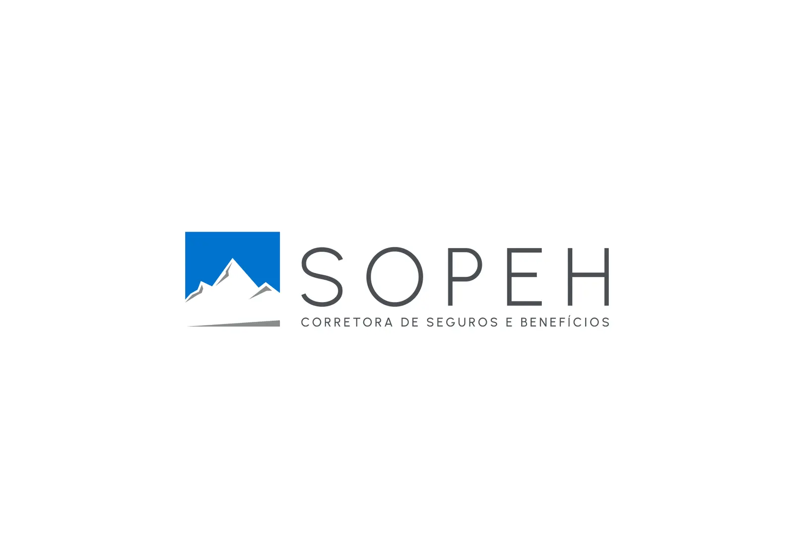
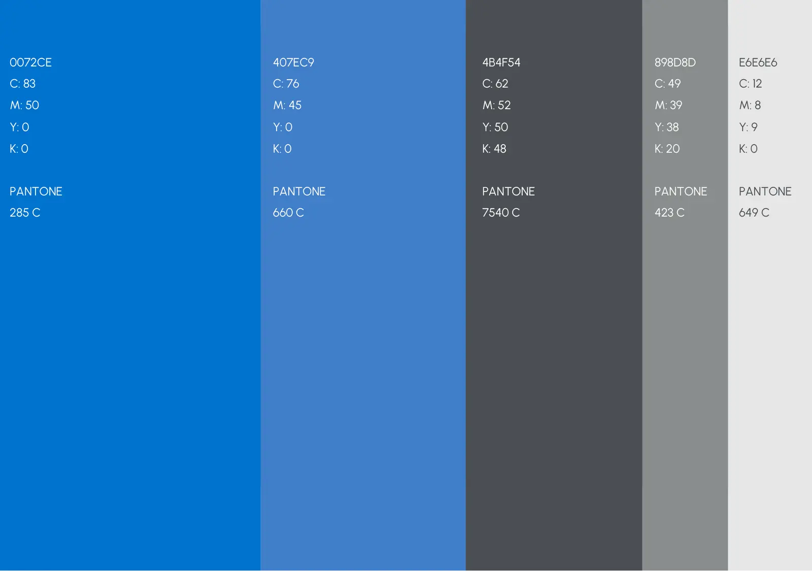
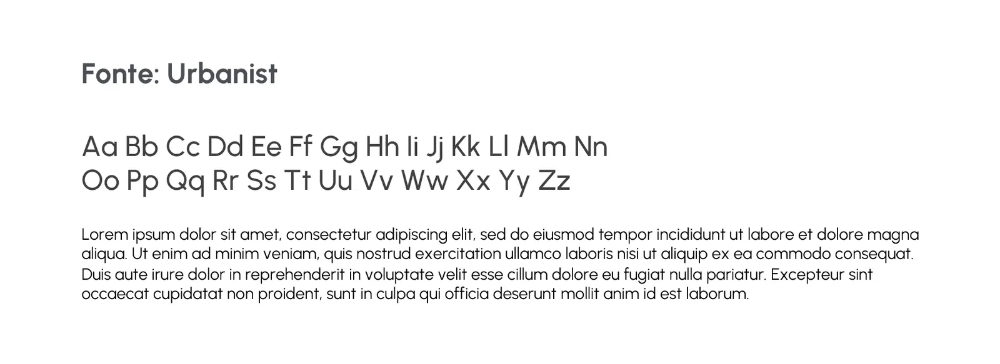
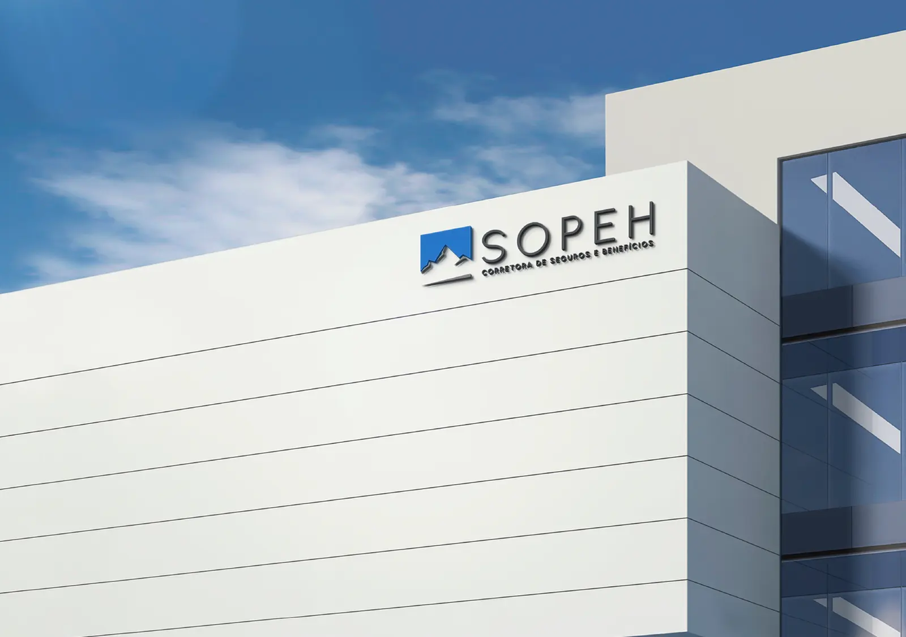
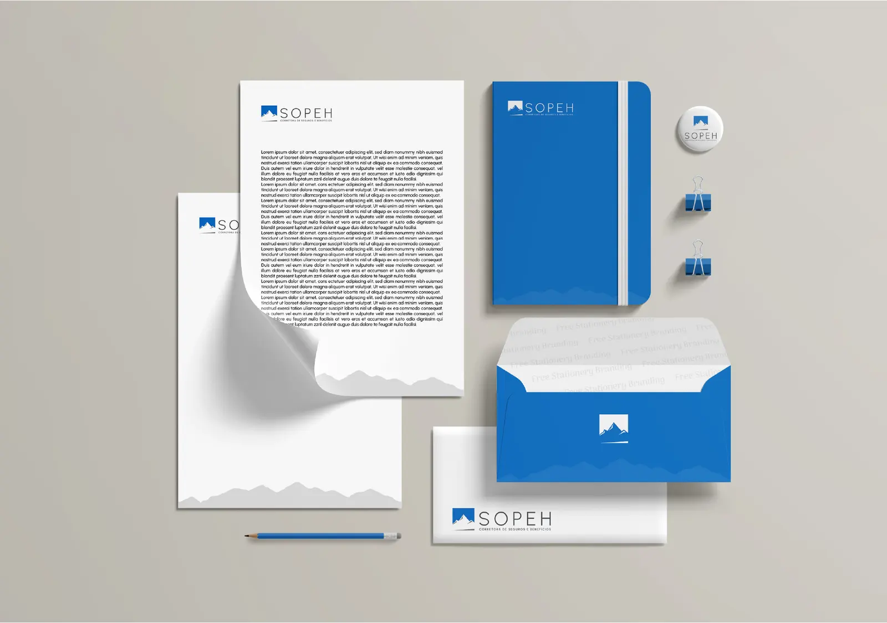
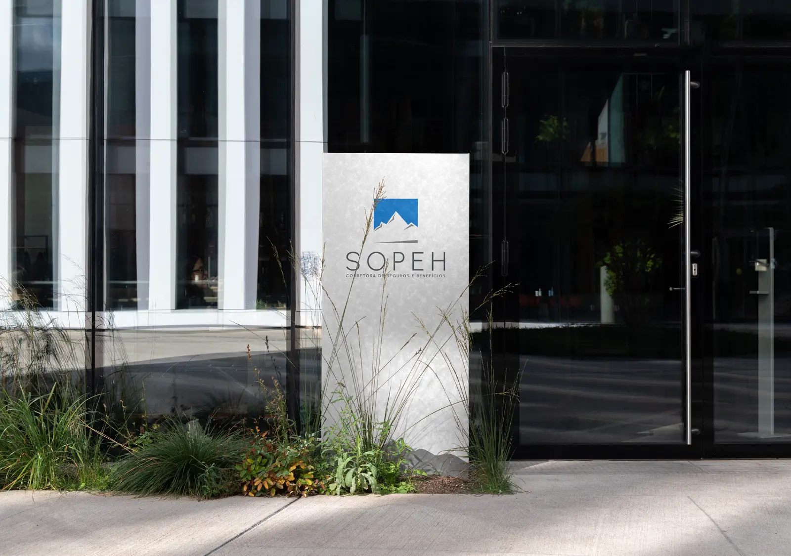
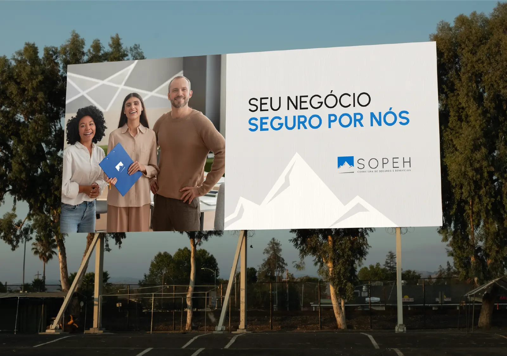
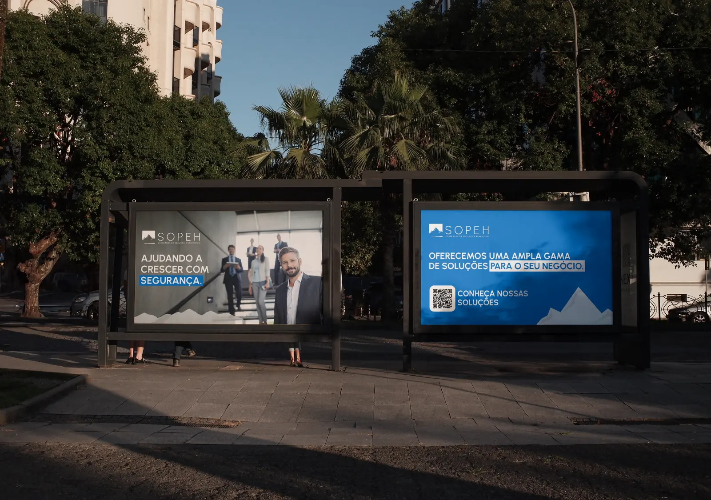

Seguros e benefícios
Sopeh

O desafio foi representar visualmente um conceito de marca que já existia. Após estudos e análises, a solução foi retratar a Sopeh por meio de uma montanha, símbolo natural de solidez, imponência e consistência, valores que a empresa carrega em mais de 13 anos de mercado.
Para traduzir o nome, que remete ao “sopé”, uma linha sob a montanha funciona como base e simboliza segurança. Os três picos representam os valores, os objetivos e os compromissos da marca com seus clientes.
O azul transmite segurança, calma e serenidade, e os dois tons de cinza trazem neutralidade, estabilidade e equilíbrio. Juntos, formam uma identidade que comunica, sem precisar dizer, que é uma marca em quem se pode confiar.







